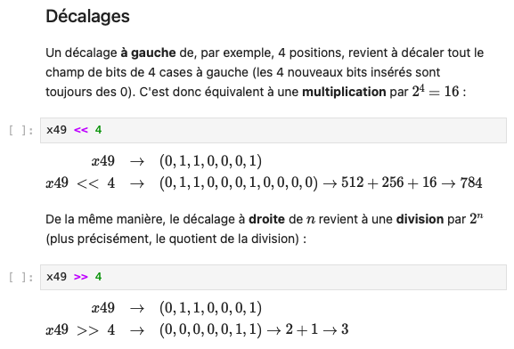

1. Organisation du MOOC
profectae
2. Pourquoi Python ?
profectae
3. Interpréteur et IDLE
profectae
4. Les notebooks
Terminé le 21/12/2023
5. Notions de variable, d'objet et typage dynamique
Le moyen en python de manipuler ces objet, c'est de leur donner un nom par l'intermédiaire de variables. On dit que les variables référencent les objets. Un objet contient des données, il contient également un ensemble de mécanismes qui permettent de manipuler ces données et que l'on appelle méthode. Les objets ont tous un type. Le type est le comportement par défaut qui va être défini pour ces objets. En python le type n'est pas lié à la variable qui référence l'objet mais est lié à l'objet. En fait, Python est un langage que l'on appelle un langage à typage fort, ça veut dire que le typage est lié aux objets et que l'objet va garder le même type durant toute l'exécution du programme. Par contre, la variable, elle, peut référencer des objets qui vont être de type différent en cours d'exécution.
Liste des mots-clés qu'on ne peut pas utiliser comme nom de variable : False await else import pass
None break except in raise
True class finally is return
and continue for lambda try
as def from nonlocal while
assert del global not with
async elif if or yield
isinstance(23,int)
Renvoie : True
type(1)
Renvoie : que la class est int
6. Les types numériques
Pour écrire un complexe : 2+4j.
2**3 (2 puissance 3)
6/4 renvoie 1.5
6//4 renvoie 1 (division euclidienne)
6%4 renvoie 2 (reste de la division euclidienne)
reponse = input("quel est votre age ? ") => demande à l'utilisateur d'entrer un age.
Convertir en int : age = int(reponse).
Pour convertir en une chaine de caractère, on fait str(3264).
Une liste peut être panachée : contenir à la fois des entiers, des float et des string.
liste = [0, 3, 5]
liste [2] renvoie 5.
entier %= 5
print('modulo 5:', entier)
# on importe le module fractions, qui lui-même définit le symbole Fraction
from fractions import Fraction
# et cette fois, les calculs sont exacts, et l'expression retourne bien True
Fraction(3, 10) - Fraction(1, 10) == Fraction(2, 10)
ET &, OU | et OU exclusif ^.

Fin le 26/12/2023
1. Codage, jeux de caractères et Unicode
profectae
2. Les chaines de caractères
profectae
3. Les séquences
profectae
4. Les listes
profectae
5. Introduction aux tests if et à la syntaxe
profectae
6. Introduction aux boucles for et aux fonctions
profectae
7. Introduction aux compréhensions de listes
profectae
8. Introduction aux boucles for et aux fonctions
profectae
1. Les fichiers
profectae
2. Les tuples
profectae
3. Tables de hash
profectae
4. Les dictionnaires
profectae
5. Les ensembles
profectae
6. Les exceptions
profectae
7. Les références partagées
profectae
8. Introduction aux classes
profectae
1. Fonctions
profectae
2. Tests if/elif/else et opérateurs booléens
profectae
3. Boucles while
profectae
4. Portée des variables - règmle LEGB
profectae
5. Modification de la portée avec global et nonlocal
profectae
6. Passage d'arguments et appel de fonctions
profectae
1. Itérable, itérateur, itération
profectae
2. Objet fonction, fonction lambda, map et filter
profectae
3. Compréhension de listes, sets et dictionnaires
profectae
4. expressions et fonctions génératrices
profectae
5. Modules et espaces de nommage
profectae
6. Processus d'importation des modules
profectae
7. Importation des modules et espaces de nommage
profectae
1. Classes, instances et méthodes
profectae
2. Méthodes spéciales
profectae
3. Héritage
profectae
4. Héritage multiple et ordre de résolution des attributs
profectae
5. Variables et attributs
profectae
6. Conception d'itérateurs
profectae
7. Conception d'exceptions personnalisées
profectae
8. Conception de context manager
profectae
9. Outils annexes et exos en vrac
profectae
1. Présentation générale
profectae
2. Numpy : le type ndarray
profectae
3. Numpy : slicing, reshaping et indexation avancée
profectae
4. Numpy : vectorisation
profectae
5. Numpy : broadcasting
profectae
6. Pandas : introduction aux series et aux index
profectae
7. Pandas : le type DataFrame
profectae
8. Pandas : opérations avancées
profectae
9. Pandas : gestion des dates et des séries temporelles
profectae
10. matplotlib et dataviz
profectae
1. Programmation asynchrone
profectae
2. Quelques exemples simples
profectae
3. asyncio : historique et écosystème
profectae
4. Extensions asynchrones du langage
profectae
5. Coroutines et awaitables
profectae
6. Boucles d'évènements
profectae
7. Tâches et exceptions
profectae
8. La librairie asyncio
profectae
9. Bonnes pratiques
profectae
1. Méthodes statiques et de classe
profectae
2. Les décorateurs
profectae
3. Les clôtures de fonctions
profectae
4. Les métaclasses
profectae
5. property et descripteurs
profectae
6. Protocole d'accès aux attributs
profectae
profectae
profectae
profectae
Amicitia aliarum satietates vetulis debent rerum multos num amicitia digni munus satietates digni quae equis.
Référence de la citation
2019-05 : Constituendi autem sunt qui sint in amicitia fines et quasi termini diligendi. De quibus tres video sententias ferri, quarum nullam probo, unam, ut eodem modo erga amicum adfecti simus, quo erga nosmet ipsos, alteram, ut nostra in amicos benevolentia illorum erga nos benevolentiae pariter aequaliterque respondeat, tertiam, ut, quanti quisque se ipse facit, tanti fiat ab amicis.